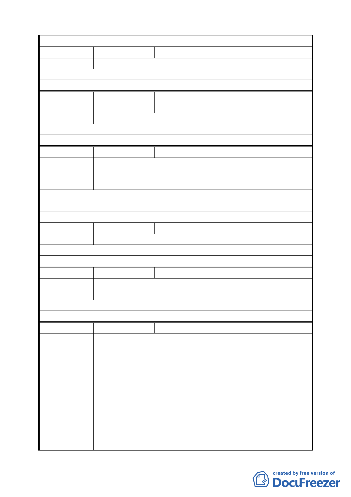

委 員 會 決 議 同編號 1。
編 號 15 陳情人 黃學仁、黃學德（民權西路 231 號）
陳 情 理 由 沒有意願參加聯合開發。
建 議 辦 法 建議停止推動本案。
委 員 會 決 議 同編號 1。
編
號 16
陳情人
詹明謙、詹菊妹（民權西路 233 號 1 樓、4
樓）
陳 情 理 由 堅決反對聯合開發。
建 議 辦 法 堅決反對聯合開發。
委 員 會 決 議 同編號 1。
編 號 17 陳情人 呂錦芸（民權西路 237 號 1～5 樓）
東側基地有 80％以上住戶反對，本房地剛花費千餘萬裝潢，
陳 情 理 由 政府幾次說明會均草草舉行，本人未獲通知參加，政府卻一
意孤行，恐引起更大抗爭。
建
議
辦
法
住戶已組成自地自建會，請委員會重新考量以強姦民意方式
強制開發，或重開說明會，延遲本案或廢止本案。
委 員 會 決 議 同編號 1。
編 號 18 陳情人 林大木（民權西路 239－1 號）
陳 情 理 由 不同意聯合開發。
建 議 辦 法 不同意聯合開發。
委 員 會 決 議 同編號 1。
編 號 19 陳情人 李燕華、李昌勝（民權西路 243 號）
陳
情
理
由
不同意，因捷運聯合開發計畫案將影響分配權益，有待商
榷。
建 議 辦 法 不同意。
委 員 會 決 議 同編號 1。
編 號 20 陳情人 趙麗華（民權西路 245 巷 1 號）
針對都市計畫「擬定臺北市捷運系統新莊線（北市段）大橋
國小站聯合開發區（捷）細部計畫案」本區域多數里民及本
人（持有大同區民權西路 245 巷 1 號 1 樓之建築物）堅決反
對參與該聯合開發案，敬請 貴委員會能實際瞭解本區住民
真實民意，避免引起民怨憾事，本人不認同及不接受捷運工
陳 情 理 由 程局對本開發案的作業程序，該局先以簡陋的問卷訪查表資
料為民意依據繼而套用大眾捷運法規迫使百姓附和順從，形
同強姦民意，在此刻本區民眾尚無得到任何相關單位告知開
發計畫的營建藍圖與細部問題，如此潦草顛倒行事勢必影響
百姓權益，本人樂見社區的新生繁榮但也希望行政當局能顧
及百姓權益。期盼 貴委員會的專家賢達能正視本區里民的
一二